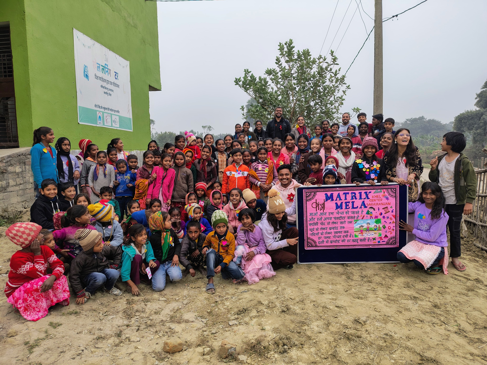
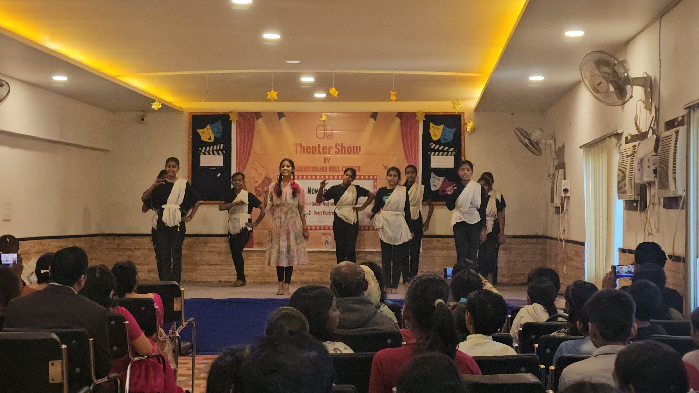
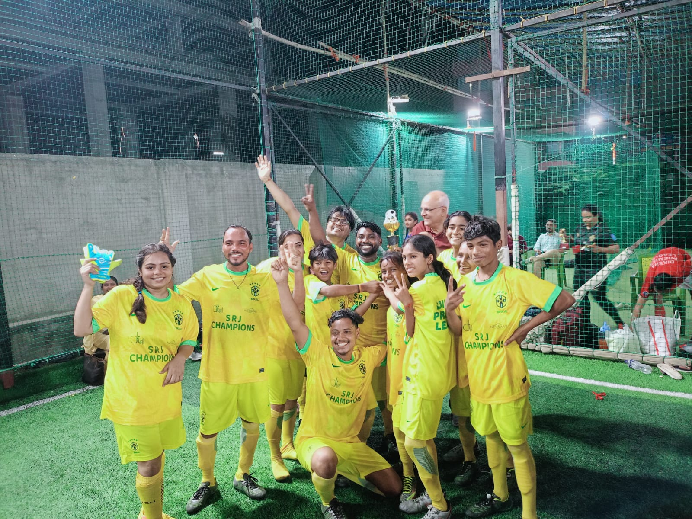
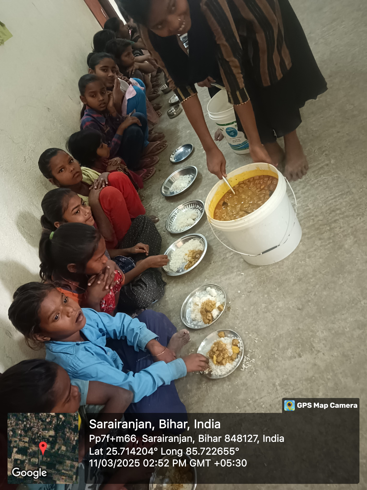

Hindi, English, mathematics and science
Age-based groups build foundational skills and work through concepts that need more explanation, practice or confidence.
Manika · Sarairanjan · Samastipur
The newest KHEL centre has grown around a simple routine: children come after school to study, use digital tools, make things, rehearse, play and take responsibility.
Opened in 2024, the centre works with children and young people from grades 1 to 12. Academic support sits alongside social-emotional learning, creativity, sport and regular meals.
See a week at KHEL
What children do here
The centre opens after school from Tuesday to Saturday and for a longer day on Sunday. Children move between focused study, collaborative work, making, performance and play.
Age-based groups build foundational skills and work through concepts that need more explanation, practice or confidence.
Children practise at their own pace while educators use the results to plan support and see where understanding is growing.
Sessions make room for attention, emotional awareness, relationships and the decisions children meet in everyday life.
Making, reading, art, craft, theatre, music and dance give children different ways to understand and communicate an idea.
Children organise, speak, listen, play in teams and help shape the routines of a centre they use together.

Visible learning
In the FY 2025–26 Hindi assessment, the average result among 148 participating learners moved from 35.8% at baseline to 76.5% at endline—a gain of 40.7 percentage points.
Assessment helps educators see where support is working. Events such as Matrix Mela ask children to go further: build a mathematical idea, explain it and answer questions from other people.
Informal school outreach
Educators use informal coordination with nearby government schools, home visits and parent meetings to understand attendance, learning and family circumstances together.
How the outreach works
The team communicates with nearby government schools when it helps support a child’s learning or continuity. Because these arrangements are informal, individual schools are not named publicly.
How the centre developed
KHEL Sarairanjan began with academic, digital and social-emotional learning. Creative work, meals, public events and sport now give the week a broader rhythm.
2024
Learning groups begin with support from BP Singh & Shakuntla Devi Foundation, bringing together academics, digital learning, SEE Learning and community contact.
2025
Art and craft, theatre, sport, summer activities, regular meals and Matrix Mela make learning visible across the centre.
2026
Children perform “Main Bihar Hoon” in Patna, and the Sarairanjan team wins the first season of the Diksha Premier League.
BP Singh & Shakuntla Devi Foundation has supported KHEL Sarairanjan since the centre opened in 2024.

Diksha Premier League
The Sarairanjan team entered Diksha’s first inter-centre football tournament with little previous experience of the game—and won.
Preparation meant learning positions, rules and teamwork quickly. Girls joined as players, and the mixed group travelled to Patna ready to compete with the other KHEL centres.
The trophy matters. So does what came before it: turning up, listening, practising together and finding a place in the team.
Nutrition and continuity
Through Zomato Feeding India, children receive regular hot meals at the centre. In FY 2025–26, KHEL Sarairanjan served 25,941 meals over 259 functional days.
Food, water, a steady timetable and caring adults create the everyday conditions in which children can settle into study and participation.

Support KHEL Sarairanjan
Support sustains educators, learning materials, digital access, meals, creative practice, sport and the time needed to stay connected with children and families.